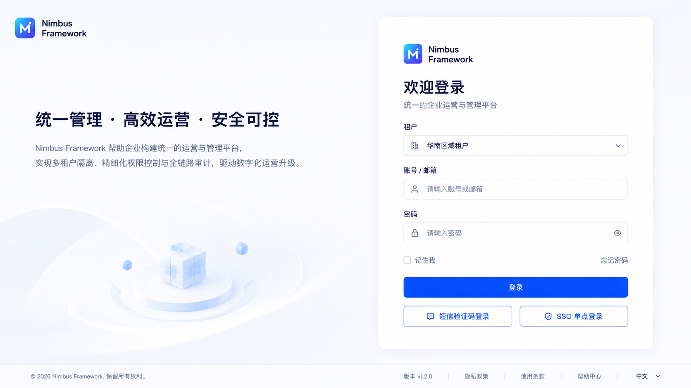
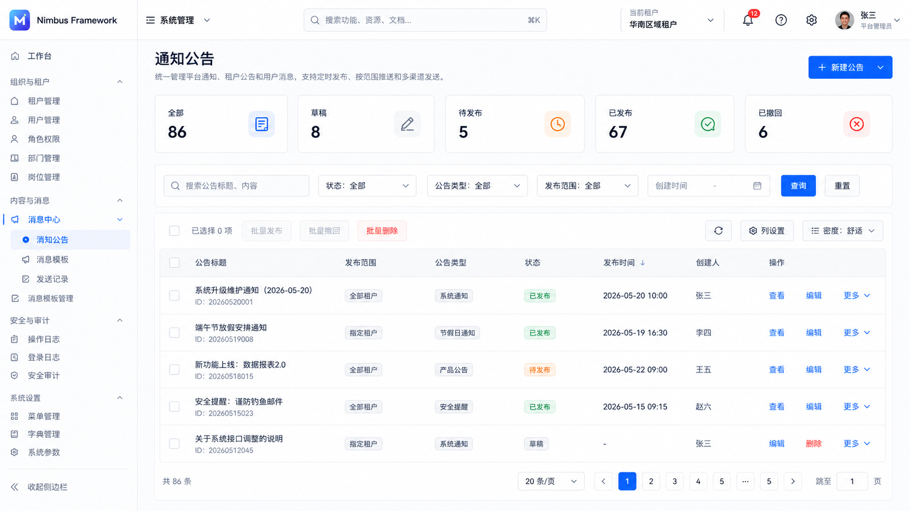

JAVA
Nimbus Framework
模块化单体。完整 Java 业务底座，部署简单，适合创业公司与中小团队。
- JDK 25 / Spring Boot 4
- 单进程模块化部署
- MySQL 8.4 + Redis
JAVA · GO · MONOLITH · MICROSERVICES
面向 APP 后台与企业运营平台的免费开源底座。共享 Nimbus 新 UI、MySQL 8.4 数据基线与清晰的 System、Infra、Member、Pay 模块边界。
NIMBUS PLATFORM
FRAMEWORK MATRIX
单体版适合创业团队快速交付；Cloud 版适合需要独立扩缩容与服务治理的平台。
JAVA
模块化单体。完整 Java 业务底座，部署简单，适合创业公司与中小团队。
JAVA
Java 微服务版。System、Infra、Member、Pay 独立进程，内置网关和注册发现。
GO
Go 模块化单体。前后端分层，后端按领域模块组织，核心管理闭环已迁移。
GO
Go 微服务版。统一网关和独立中心进程，兼顾低资源占用与清晰服务边界。
ENGINEERING DOCUMENTS
文档与代码同仓维护，覆盖本地启动、架构、数据库适配、部署和 Agent 协作规范。
SHARED DESIGN SYSTEM
浅色导航、统一品牌、登录页与 Loading 体验一致，业务表格和交互保持原有成熟实现。

